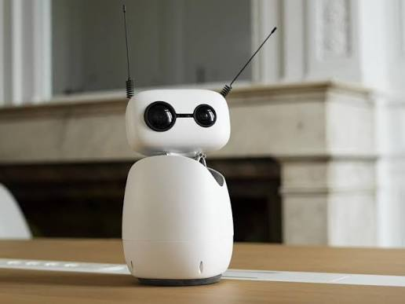

Reachy Mini; insan-robot etkileşimi, yaratıcı kodlama ve yapay zeka deneyleri için tasarlanmış, etkileyici bir yardımcı robottur. Düşük maliyetli ve erişilebilir bir platform olarak geliştirilen bu robot, modern yapay zeka modelleriyle güçlendirilmiş ve giderek büyüyen bir açık kaynaklı robotik topluluğu tarafından desteklenen robotları keşfetmek adına uygulamalı bir deneyim sunar.
YAPİMCİSİ: Pollen Robotics
Geri Dön